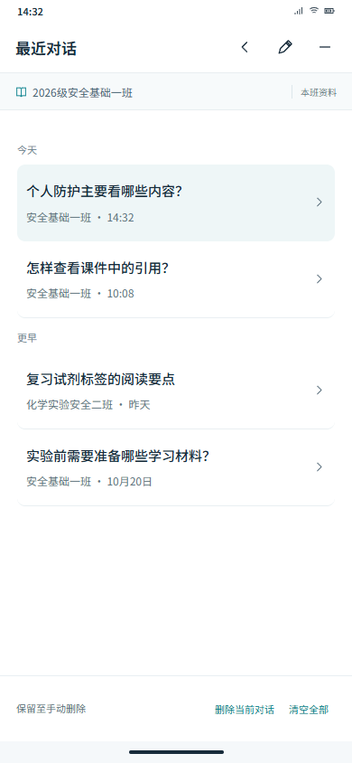
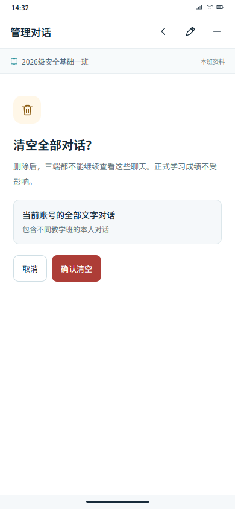
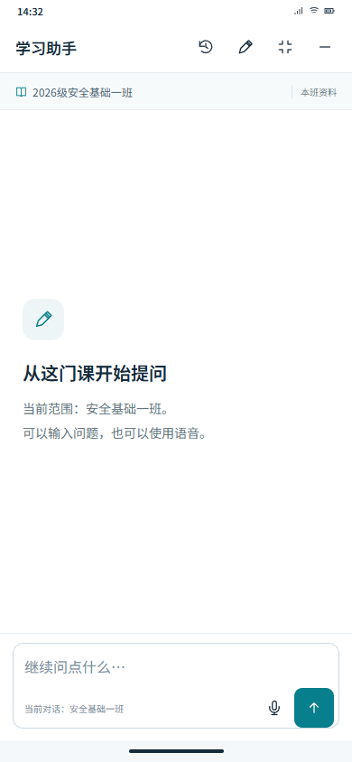
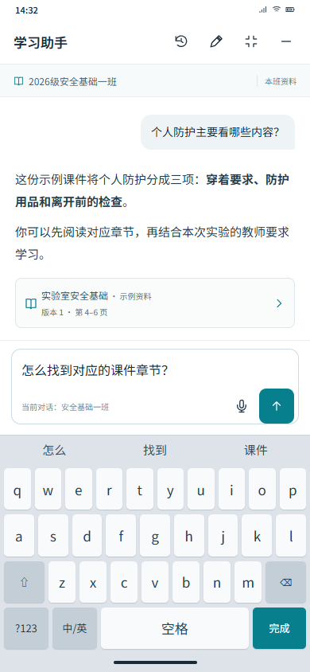
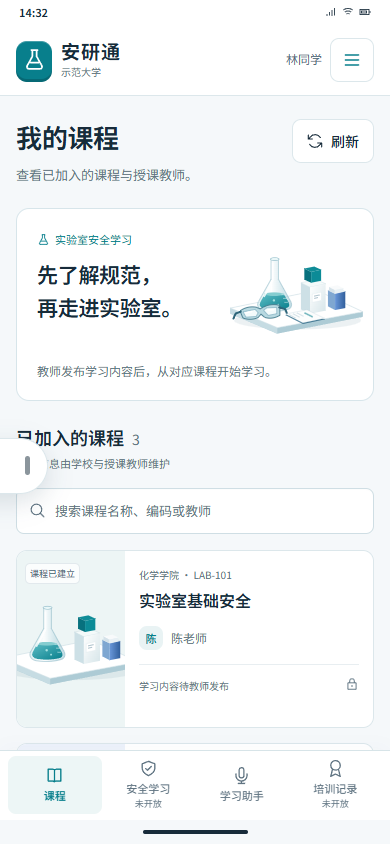
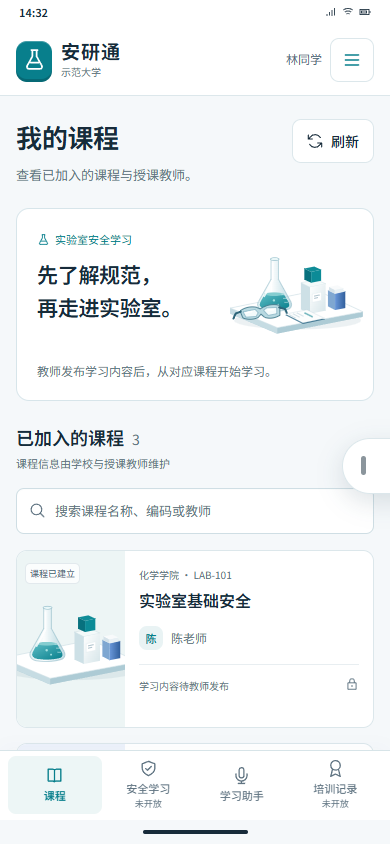
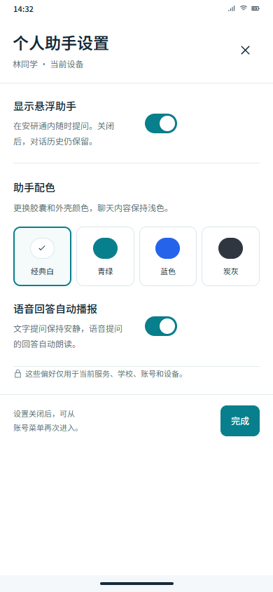
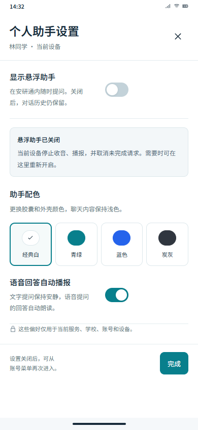
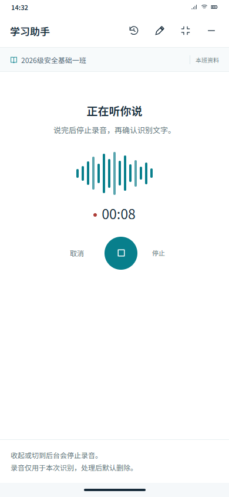

mobile-history · 手机最近对话

mobile-clear · 手机清空历史确认

mobile-new · 手机新对话

mobile-keyboard · 输入与键盘避让

mobile-dock-left · 手机左侧半隐藏

mobile-dock-right · 手机右侧半隐藏

mobile-settings · 手机助手设置

mobile-disabled · 手机关闭后可恢复

mobile-recording · 手机录音